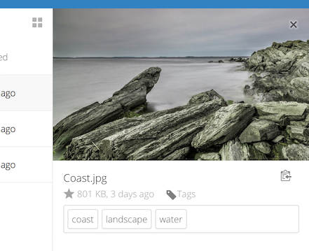
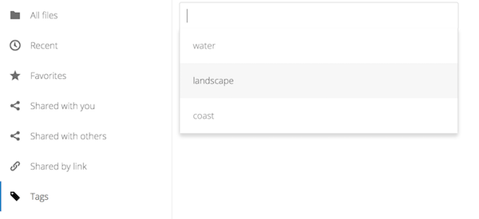
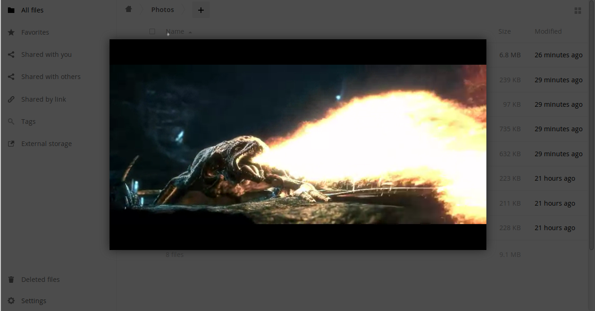
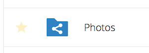
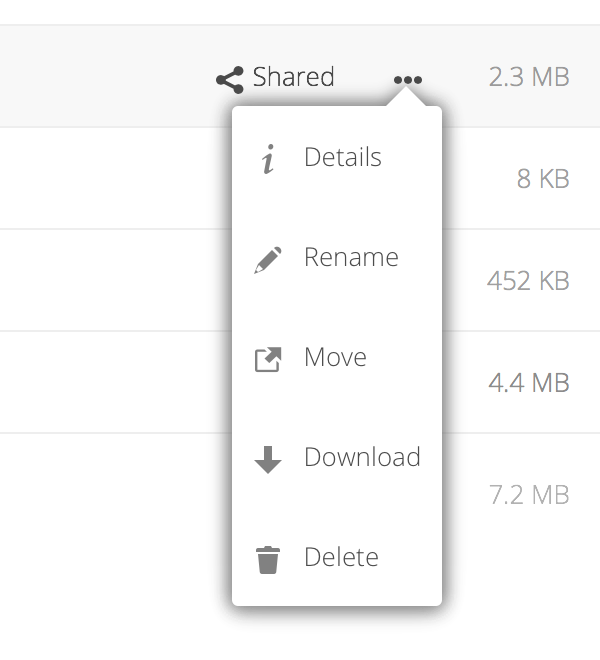
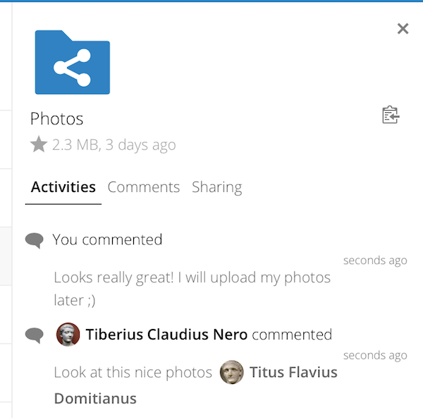

Toegang tot je bestanden via de Nextcloud webinterface
Je kunt toegang krijgen tot je Nextcloud-bestanden via de Nextcloud-webinterface en bestanden aanmaken, bekijken, bewerken, verwijderen, delen en opnieuw delen. Je Nextcloud-beheerder heeft de mogelijkheid om deze functies uit te schakelen, dus als een van deze ontbreekt op jouw systeem, vraag het dan aan je serverbeheerder.

Labels toekennen aan bestanden
Je kunt labels toewijzen aan bestanden. Om labels aan te maken, open je een bestand in de Detailsweergave. Typ vervolgens je labels. Om meer dan één label in te voeren, druk je na het maken van elk label op de enter-toets. Alle labels zijn systeemlabels en worden gedeeld door alle gebruikers op je Nextcloud-server.

Gebruik dan het Tags filter op de linker zijbalk om bestanden te filteren op tags:

Videospeler
Je kan video’s in Nextcloud afspelen met de Video Player app door simpelweg op het bestand te klikken. Het streamen van video’s met de Nextcloud videoplayer is afhankelijk van jouw webbrowser en het videoformaat. Als jouw Nextcloud beheerder het streamen van video’s heeft ingeschakeld en het werkt niet in je webbrowser, kan het gaan om een probleem met de browser. Zie https://developer.mozilla.org/en-US/docs/Web/HTML/Supported_media_formats#Browser_compatibility voor ondersteunde multimedia-indelingen in webbrowsers.

Bestandsbeheer
Nextcloud can display thumbnail previews for various file types, such as images, audio files, and text files. The specific types supported are up to the server administrator. Hover your cursor over a file or folder to expose the controls for the following operations:
- Favorieten
Klik op de ster links van het bestandspictogram om deze als favoriet te markeren:

Je kan ook snel al jouw favorieten vinden met het Favorietenfilter aan de linker zijbalk.
- Overloop Menu
Het Meer menu (drie punten) geeft de bestandsdetails weer en maakt het mogelijk om bestanden te hernoemen, te downloaden of te verwijderen:

De detailweergave toont informatie over activiteiten, delen en versies:

Met het Instellingen pictogram linksonder kan je verborgen bestanden in jouw Nextcloud webinterface weergeven of verbergen. Deze worden ook wel dotfiles genoemd, omdat ze voorafgegaan worden door een punt, bijvoorbeeld “.mailfile”. De punt vertelt jouw besturingssysteem om deze bestanden te verbergen in je bestandsbrowsers, tenzij je ervoor kiest om ze weer te geven. Meestal zijn dit configuratiebestanden, dus de mogelijkheid om ze te verbergen vermindert de rommel.

Previewing bestanden
Je kan ongecomprimeerde tekstbestanden, OpenDocument bestanden, video’s en afbeeldingsbestanden weergeven in de Nextcloud embedded viewers door op de bestandsnaam te klikken. Er kunnen andere bestandstypen zijn die je kan bekijken als jouw Nextcloud-beheerder deze heeft ingeschakeld. Als Nextcloud een bestand niet kan weergeven, start het een downloadproces en wordt het bestand gedownload naar je computer.
Statuspictogrammen voor delen
Elke map die gedeeld is, is gemarkeerd met het “Shared”-pictogram. Publieke share links zijn gemarkeerd met een kettingschakel icoon. Niet gedeelde mappen zijn niet gemarkeerd:

Bestanden en mappen aanmaken of uploaden
Upload of creëer nieuwe bestanden of mappen direct in een Nextcloud map door te klikken op de knop Nieuw in de Files app:

De knop Nieuw biedt de volgende opties:
- Pijl omhoog
Upload bestanden van je computer naar Nextcloud. Je kan ook bestanden uploaden door ze te slepen vanaf je bestandsbeheerder.
- Tekstbestand
Maakt een nieuw tekstbestand aan en voegt het bestand toe aan je huidige map.
- Map
Maakt een nieuwe map aan in de huidige map.
Bestanden of mappen selecteren
Je kan een of meer bestanden of mappen selecteren door op hun selectievakjes te klikken. Om alle bestanden in de huidige map te selecteren, klik je op het selectievakje bovenaan de lijst met bestanden.
Wanneer je meerdere bestanden selecteert, kan je ze allemaal verwijderen, of ze downloaden als een ZIP-bestand met behulp van de knoppen “Verwijderen` of `Downloaden” die bovenin verschijnen.
Notitie
Als de knop “Downloaden” niet zichtbaar is, heeft de beheerder deze functie uitgeschakeld.
Het filteren van bestanden
De linker zijbalk op de pagina Bestanden bevat verschillende filters voor het snel sorteren en beheren van je bestanden.
- Alle bestanden
De standaardweergave geeft alle bestanden weer waartoe je toegang hebt.
- Favorieten
Bestanden of mappen gemarkeerd met de gele ster.
- Gedeeld met jou
Toont alle bestanden die met jou worden gedeeld door een andere gebruiker of groep.
- Gedeeld met anderen
Toont alle bestanden die je hebt gedeeld met andere gebruikers of groepen.
- Gedeeld door link
Toont alle bestanden die door jou worden gedeeld via een publieke link.
- Externe opslag (optioneel)
Bestanden waartoe je toegang hebt op externe opslagapparaten en -diensten zoals Amazon S3, SMB/CIFS, FTP…
Bestanden verplaatsen
Je kan bestanden en mappen verplaatsen door ze naar een willekeurige map te slepen.
Opmerkingen
Gebruik de Details-weergave om opmerkingen toe te voegen en te lezen over elk bestand of elke map. Opmerkingen zijn zichtbaar voor iedereen die toegang heeft tot het bestand: